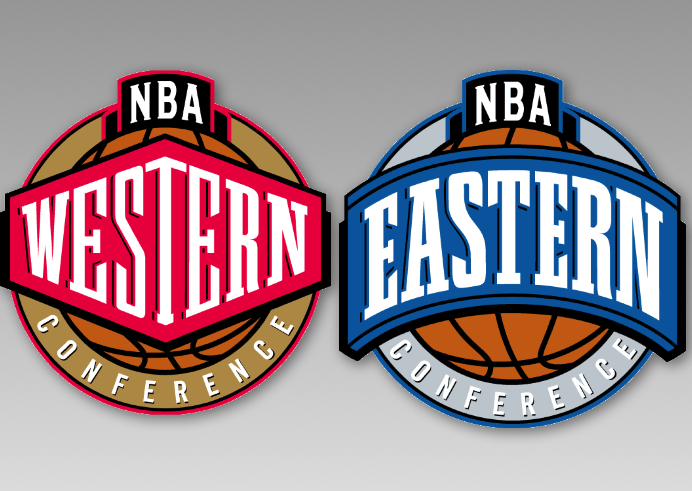

En la temporada regular cada equipo disputa 82 partidos, divididos en partes iguales entre encuentros de local y visitante. El calendario no es el mismo para todos. Los equipos se enfrentan con los oponentes de su propia división en cuatro ocasiones; ante los de las otras dos divisiones de su conferencia, entre tres o cuatro veces; y contra los de la otra conferencia, dos veces al año. Por lo tanto, un equipo puede tener fácil o difícil el calendario, dependiendo en la división o conferencia en la que esté localizado. Después de los recientes cambios de formato del calendario de la NHL, la de baloncesto es la única liga estadounidense de primer nivel en la que todas las franquicias se enfrentan unas contra otras durante la temporada regular, y en la que un ticket de temporada te garantiza poder ver a tu equipo cada vez que venga a jugar a la ciudad durante la temporada regular.
Los Playoffs de la NBA consiste en cuatro rondas de competición entre dieciséis equipos repartidos en la Conferencia Oeste y la Conferencia Este, ocho equipos por cada Conferencia. Los ganadores de la Primera Ronda (o cuartos de final de conferencia) avanzan a las Semifinales de Conferencia, posteriormente a las Finales de Conferencia y los vencedores a las Finales de la NBA, disputadas entre los campeones de cada conferencia. Comienzan a finales de abril, con ocho equipos de cada conferencia clasificados. Hasta la temporada 2005-2006, los tres primeros puestos de cada conferencia venían determinados por los primeros clasificados en cada división, siguiendo a su vez el balance victorias-derrotas.
En la ronda final, se enfrentan los campeones de cada conferencia al mejor de siete partidos. El primero que consiga vencer en cuatro partidos, se le conocerá como el campeón de la NBA. Se disputa anualmente en junio, y al campeón se le galardona con el Larry O'Brien Championship Trophy desde 1977, fecha en la que reemplazó al Trofeo Walter A. Brown. La idea de llamar al trofeo de campeón Larry O'Brien, es en honor al comisionado de la NBA que precedió a David Stern, Larry O'Brien. A cada jugador del equipo victorioso, además del entrenador y el mánager general, se le entrega un anillo de campeón. Además, la liga entrega el trofeo Bill Russell MVP de las Finales. Este trofeo es llamado Bill Russell en honor del legendario jugador de los Celtics de Boston que ganó 11 campeonatos en 13 años de carrera profesional. Este premio normalmente lo recibe un jugador del equipo ganador, aunque esto no sea una norma. Solo ha habido una excepción hasta la fecha: Jerry West recibió el MVP de las Finales en 1969 (primera temporada en la que se entregaba este premio) a pesar de que los Lakers no ganaron el anillo.